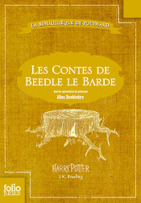

« Hors-séries » de la saga Harry Potter de J.K. Rowling
Harry Potter et moi, c’est une grande histoire d’amour. Je ne sais plus si je l’ai déjà dit sur ce blog, mais j’ai grandi avec les jeunes sorciers de Poudlard et c’est largement cette œuvre qui m’a donné envie d’écrire à mon tour ! J’ai lu toute la saga de J.K. Rowling, bien sûr (des dizaines de fois même), mais je n’en parlerai pas ici. Je vais plutôt m’attarder sur les derniers opus du monde des sorciers : Le quidditch à travers les âges, Les animaux fantastiques et Les contes de Beedle le barde.

Le quidditch à travers les âges
Le livre est court et se présente sous la forme d’un essai sur l’histoire du quidditch :
- sa naissance
- ses débuts
- la création des balais de course
- les équipes du monde entier
- les tournois
- les règles du jeu

Évidemment, il est écrit par J.K. Rowling, mais un autre nom d’auteur figure sur la couverture : Kennilworthy Whisp. C’est un sorcier passionné par ce sport magique qui a fait des recherches pour écrire son livre. Il est heureux de partager ses connaissances avec les amateurs de quidditch.
La préface, écrite par Albus Dumbledore lui-même, nous explique, entre-autres choses, comment les recettes générées par les ventes du livre serviront à rendre le monde meilleur parce qu’elles seront reversées à une association. C’est bien, mais c’est bizarrement dit.
Ce que j’aime dans le livre
J’aime retrouver des éléments qui apparaissaient déjà dans les romans Harry Potter, comme la feinte de Wronski (une technique pour détourner l’attention de l’attrapeur adverse du vif d’or) ou les Canons de Chudley (l’équipe préférée de Ron) par exemple.
J’aime que le monde magique soit étoffé et vivant, indépendamment des aventures de notre sorcier préféré. Et j’aime qu’à travers ce monde apparaissent également l’implication des autres pays que le Royaume-Uni.
Ce que je n’aime pas dans le livre
Je n’aime pas l’humour gratuit, à savoir les blagues ou les évènements improbables qui sont relatés dans l’histoire du quidditch uniquement pour faire rire le lecteur. L’association qui doit recevoir les recettes des ventes se donne pour objectif de faire rire les gens démunis. Cet humour sur-joué est clairement inséré dans ce but et c’est dommage. Au contraire, la plupart des choses qui pourraient être drôles sont en fait ridicules et font passer les sorciers pour de sombres crétins.
Je n’aime pas les clichés que l’on retrouve sur les différents pays adeptes de quidditch. Le plus gros, selon moi, concerne le Japon. Tous les pays d’Asie sont réputés pour ne pas aimer le quidditch parce qu’il se pratique sur des balais alors que les sorciers de ces pays préfèrent l’utilisation du tapis volant. Seulement, le Japon fait exception à la règle, tout comme, dans notre monde réel, il est le pays le plus « occidentalisé » de toute l’Asie.
Je n’aime pas les petits messages de Dumbledore nous menaçant des pires sortilèges possibles si l’on n’a pas acheté le livre (mais qu’on le lit de manière illégale).
Et enfin, je n’aime pas les faux gribouillis qui apparaissent au début du livre, théoriquement mis là par des élèves de Poudlard.
Les animaux fantastiques
Cette partie sera plus courte, car de nombreuses choses se recoupent avec Le quidditch à travers les âges.
Le livre est aussi présenté comme étant celui d’un autre auteur que J.K. Rowling, Norbert Dragonneau (ou Newt Scamander) qui sera bientôt connu du monde entier grâce à l’adaptation cinématographique prévue pour 2016. Ce sorcier est un chercheur en zoomagicologie et il répertorie pour nous toutes les créatures magiques qu’il a découvertes au cours de ses voyages, allant de l’acromantule au vampire, en passant par le dragon et l’hippogriffe.
Ce que j’aime dans le livre
J’aime retrouver des créatures auxquelles Harry, Ron et Hermione ont déjà eu affaire ou qui ont seulement été citées dans les romans.
J’aime que leur « degré » de dangerosité soit marqué par une note et que l’on recense les cas où des moldus ont vu ces créatures.
Ce que je n’aime pas dans le livre
Les mêmes choses que dans Le quidditch à travers les âges :
- la préface de Dumbledore
- l’humour forcé
- les gribouillis des élèves
- le manque d’illustrations
Les contes de Beedle le barde
Ce livre-ci est un recueil de contes pour enfants. Hermione l’obtient de Dumbledore dans Les reliques de la mort. Il contient Le conte des trois frères, mais aussi Lapina la babille et sa queue qui caquetait (nommé Babbitty Lapina et la souche qui gloussait dans le livre), que Ron semble tant affectionner#8239;!
Ce que j’aime dans le livre
Les contes sont bons. Il est très vraisemblable qu’ils aient bercé l’enfance des jeunes sorciers comme Cendrillon ou Blanche-Neige ont bercé celle des moldus.
J’aime aussi les petites illustrations, même si, pour le coup, elles pourraient être plus lisibles et plus nombreuses.
Ce que je n’aime pas dans le livre
Les notes de Dumbledore sur les contes qui nous empêchent un peu de nous faire notre propre avis dessus.
Voilà pour mon avis global sur ces trois mini-livres de la saga Harry Potter. Je suis plus mitigée que ravie par leur intrusion dans le monde magique. C’est bien que l’univers de J.K. Rowling soit aussi élaboré, mais tout ce qui tourne autour du contenu – les reproches aux pirates de livre et les dons à l’association – sont trop mis en avant. On dirait que l’auteure veut se vanter d’avoir fait cette bonne action !Il n’empêche que si vous aimez l’univers de Harry Potter, ce serait dommage de ne pas lire ces trois opus.